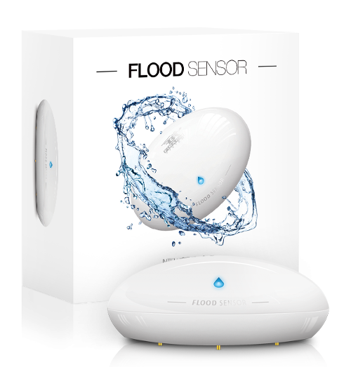
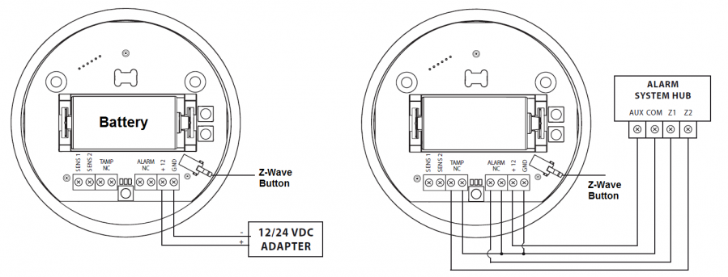
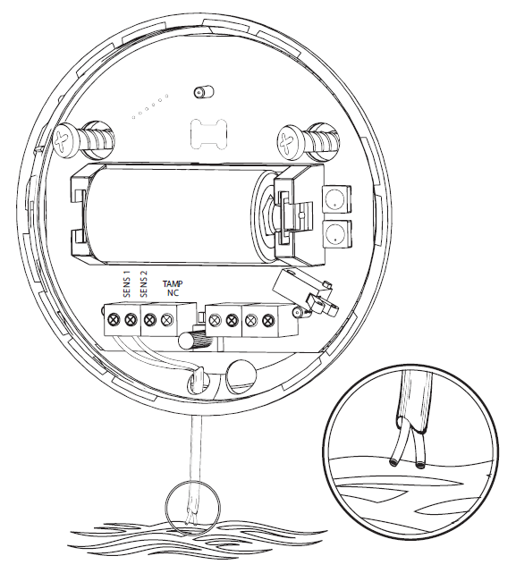

FIB_FGFS-101
Firmware Version : 23.23 |
 |
KurzinfoS Dieses Gerät ist ein Z-Wave Sensor. Drücken Sie zum Inkludieren oder Exkludieren des Gerätes dreimal schnell die Z-Wave Taste im Gehäuseinneren des Gerätes. Das dreimalige Drücken der Z-Wave Taste im Gehäuseinneren weckt das Gerät auf und hält es eine kurze Zeit im Wachzustand. Weitergehende Informationen finden sich in den jeweiligen Abschnitten dieses Handbuches. |
Produktbeschreibung
Der Fibaro Überflutungssensor warnt Sie vor einer drohenden Überschwemmung oder einem schnellen Temperaturanstieg oder -abfall und hat eine Vielzahl zusätzlicher Funktionen. Dank seiner flexiblen goldenen Teleskopsonden funktioniert das Gerät auch auf unebenen Oberflächen. Der Überflutungssensor hat eine eingebaute Alarmsirene, die Ihnen hilft, im Falle einer Überschwemmung, einem rapiden Temperaturwechsel oder einem Manipulationsversuch, schnell zu reagieren. Abgesehen von der Alarmsirene kann das Gerät Sie über die Farbanzeige der eingebauten RGB-Diode vor einer Bedrohung warnen. Zudem besitzt das Gerät einen Neigungssensor, welcher eine Neigung und Bewegung über 15 Grad erkennt und daraufhin eine Meldung an den Controller sendet. Der eingebaute Temperatursensor kann nicht nur als Feueralarmsensor verwendet werden, er lässt sich ebenso für die Regelung einer Fußbodenheizung nutzen.
Über den Input-Anschluss ist es möglich, eine externe Sonde anzuschließen und den Sensor an jedem beliebigen Ort zu installieren. Der Ausgangsanschluss ermöglicht beispielsweise den Anschluss an eine Alarmanlage. Der Fibaro Überflutungssensor kann mit 12/ 24V DC oder Batterie betrieben werden.
Installationsanleitung

Der Fibaro Überflutungssensor kann auf zwei Arten mit Strom versorgt werden, mit Batterie oder Feststrom. Im Auslieferungszustand wird das Gerät mit der mitgelieferten CR123A Batterie versorgt. Zusätzlich kann es mittels 12 /24V DC durch Anschließen der Stromquelle an + 12 und GND betrieben werden. Die Konfiguration der Stromversorgung wird automatisch beim Inkludieren des Sensors in ein Z-Wave Netzwerk eingestellt. Wird das Gerät mit Batterie betrieben, kommuniziert es periodisch mit dem Z-Wave Controller. Festgestellte Alarme werden unverzüglich gesendet, aber Konfigurationsdaten und Assoziationen werden nur beim automatischen oder manuellen Aufwecken des Gerätes empfangen. Wird das Gerät mit Feststrom betrieben, werden auch die Konfigurationsdaten und Assoziationen unverzüglich empfangen bzw. gesendet. Zusätzlich funktioniert das Gerät dabei als Signal-Repeater für Z-Wave.
Umschalten der Stromquelle zu Feststrom:
- Exkludieren Sie das Gerät aus dem Netzwerk.
- Schließen Sie das Gerät an die Stromquelle mittels der Anschlüsse +12 und GND gemäß Abbildung 1 an.
- Inkludieren Sie den Fibaro Überflutungssensor erneut in das Z-Wave Netzwerk.
Wird das Gerät mit einem Netzteil betrieben, benötigt es keine zusätzliche Batterie. Es wird dennoch empfohlen eine Batterie im Gerät zu belassen, um die Alarmfunktionen auch bei einem Ausfall der Netzspannung zu erhalten. Wenn die Netzspamnnung, wechselt das Gerät automatisch in den Notbetrieb. Alle Reports werden unverzüglich gesendet, aber es ist nicht möglich die Konfiguration oder Assoziationen zu ändern, bis die Netzversorgung wiederhergestellt ist. Die Repeater-Funktion ist im Notbetrieb ebenfalls deaktiviert.
Beachte: Der Fibaro Überflutungssensor verlässt automatisch den Notbetrieb, wenn die Netzversorgung wiederhergestellt ist, und das Gerät automatisch, durch einen festgestellten Alarm, oder manuell aufgeweckt wird.

Der Überflutungssensor kann zusätzlich mit einem externen Kabel für den Flutsensor betrieben werden. Bohren Sie dazu an der vorgesehenen Stelle ein Loch in das Gehäuse und schließen Sie das Kabel gemäß Abbildung 2 an.
Verhalten des Gerätes im Z-Wave Netz
I Im Auslieferungszustand ist das Gerät mit keinem Z-Wave-Netz verbunden. Damit es mit anderen Z-Wave Geräten kommunizieren kann, muss es in ein bestehendes Z-Wave Netz eingebunden werden. Dieser Prozess wird bei Z-Wave Inklusion genannt. Geräte können Netzwerke auch wieder verlassen. Dieser Prozess heißt bei Z-Wave Exklusion. Beide Prozesse werden von einem Controller gestartet, der dazu in einen Inklusion- bzw. Exklusion-Modus geschaltet werden muss. Das Handbuch des Controllers enthält Informationen, wie er in diese Modi zu schalten ist. Erst wenn der Controller des Z-Wave Netzes im Inclusion-Modus ist, können Geräte hinzugefügt werden. Das Verlassen des Netzes durch Exklusion führt zum Rücksetzen dieses Gerätes in den Auslieferungszustand.
Bringen Sie Ihren Z-Wave Controller in den Inklusions-/Exklusionsmodus. Ein Dreifachklick auf die Z-Wave Taste im Gehäuseinneren des Gerätes bestätigt den Vorgang.
Bedienung des Gerätes
Der Fibaro Überflutungssensor hat zwei integrierte Sensoren - einen Wassersensor und einen Temperatursensor. Das bedeutet, es ist ein Mehrkanal-Gerät (Multichannel Device). Ihr Z-Wave Controller zeigt die beiden Sensoren als zwei Geräte an.
Durch konfigurierbare Assoziationen kann der Fibaro Überflutungssensor andere Z-Wave Geräte wie Dimmer, Schalter, Jalousien oder, in Verbindung mit einer Steuerzentrale, auch Szenen schalten.
Z-Wave Reichweitentest
Mit dem Fibaro Überflutungssensor kann ein Reichweitentest zum Primärcontroller des Z-Wave Netzes durchgeführt werden. Gehen Sie dazu wie folgt vor:
- Drücken und Halten Sie die Z-Wave Taste im Gehäuseinneren für 10 - 15 Sekunden, bis die LED Violett leuchtet.
- Lassen Sie die Z-Wave Taste wieder los.
- Drücken Sie die Z-Wave Taste erneut.
- Jetzt zeigt die LED mittels verschiedener Farben die Erreichbarkeit des Z-Wave Primärcontrollers an (Beschreibung siehe Unten).
- Um den Reichweitentest wieder zu verlassen, drücken Sie erneut die Z-Wave Taste.
Z-Wave Reichweitentest Signalisierung:
LED blinkt grün - Der Fibaro Überflutungssensor versucht mit dem Primärcontroller direkt zu kommunizieren. Wenn die direkte Kommunikation mißlingt, versucht das Gerät mittels gerouteter Kommunikation den Primärcontroller zu errreichen. Dabei blinkt die LED gelb.
LED leuchtet grün - Der Fibaro Überflutungssensor kommuniziert direkt mit dem Primärcontroller.
LED blinkt gelb - Der Fibaro Überflutungssensor versucht den Primärcontroller indirekt mittels gerouteter Kommunikation über andere Z-Wave Geräte zu erreichen.
LED leuchtet gelb - Der Fibaro Überflutungssensor kommuniziert indirekt mit dem Primärcontroller mittels gerouteter Kommunikation über andere Z-Wave Geräte. Nach 2 Sekunden versucht das Gerät erneut direkt mit dem Primärcontroller zu kommunizieren. Dabei blinkt die LED grün.
LED blinkt violett - Der Fibaro Überflutungssensor kommuniziert bei maximaler Reichweiten am äußeren Limit. Ist die Kommunikation erfolgreich, leuchtet die LED gelb. Es wird empfohlen das Gerät nicht am Reichweiten-Limit zu betreiben.
LED leuchtet rot - Der Fibaro Überflutungssensor kann den Primärcontroller des Netzes nicht erreichen (direkt oder indirekt).
Kommunikation mit einem batteriebetriebenen Gerät
W Das Gerät ist batteriegespeist und damit in der Regel in einem Tiefschlafmodus um Strom zu sparen. Im Tiefschlafmodus kann das Gerät keine Funksignale empfangen. Daher wird ein (statischer) Controller benötigt, der netzgespeist und damit immer funkaktiv ist. Dieser Controller - zum Beispiel ein IP-Gateway - verwaltet eine Nachrichten-Mailbox für dieses batteriegespeiste Gerät, in dem Nachrichten an dieses Gerät zwischengespeichert werden. Ohne einen solchen statischen Controller wird die Nutzung dieses batteriebetriebenen Gerätes sehr schnell zur Entladung der Batterie führen oder die Nutzung ist komplett unmöglich.
Dieses Gerät weckt regelmäßig auf, meldet dies durch Aussenden einer sogenannten Wakeup-Notifikation und leert dann seine Mailbox im statischen Controller. Dafür muss bei der Inclusion die Node-ID des Controllers und ein Aufweckinterval definiert werden. Erfolgt die Inklusion durch einen statischen Controller wie zum Beispiel ein IP-Gateway, wird dieser Controller diese Konfiguration automatisch erledigen und in der Regel eine Nutzerschnittstelle anbieten, um das Aufweckinterval den Nutzerbedürfnissen anzupassen. Das Aufweckinterval ist ein Kompromiss zwischen maximaler Batterielaufzeit und minimaler Reaktionszeit des batteriegespeisten Gerätes.
Ein Dreifachklick auf die Z-Wave Taste im Gehäuseinneren des Gerätes weckt das Gerät auf.
Es ist möglich die Gerätenummer 255 als Zielgerät für die Wakeup-Notifikation anzugeben. In diesem Falle wird die Nachricht als Broadcast an alle Geräte mit direkter Funkverbindung gesendet. Dem Vorteil der sofortigen Benachrichtigung steht als Nachteil gegenüber, das das Gerät gegebenenfalls mehr Zeit im aktiven Modus und damit mehr Batterieladekapazität verbraucht.
Node Information Frame
NIF Der Node Information Frame ist die Visitenkarte eines Z-Wave Gerätes. Es ist ein spezielles Datenpaket, in dem der Gerätetyp sowie die Funktionen des Gerätes bekanntgemacht werden. Inklusion und Exklusion eines Gerätes wird von diesem mit einem Node Information Frame beantwortet. Zusätzlich kann der Node Information Frame für bestimmte Konfigurationsprozesse des Z-Wave Netzes - zum Beispiel das Setzen von Assoziationen - benötigt werden.
Ein Dreifachklick auf die Z-Wave Taste im Gehäuseinneren des Gerätes führt zum Aussenden eines Node Information Frame.
Bedeutung der LED-Signale
Der Fibaro Überflutungssensor ist mit einer LED zur Anzeige des Gerätezustandes und von Alarmen ausgestattet. Zusätzlich kann die LED Informationen zum Z-Wave Netzwerk und der aktuellen Temperatur anzeigen.
LED Anzeige Modi:
- Flut Alarm wird durch wechselndes blau-weißes Blinken angezeigt.
- Im Batterie-Betrieb zeigt die LED (wenn Parameter 63 auf 1 ist) periodisch Temperaturintervalle an (abhängig von den Einstellungen der Parameter 50, 51, 61 und 62).
- Im Feststrom-Betrieb zeigt die LED ebenfalls periodisch Temperaturintervalle an (abhängig von den Einstellungen der Parameter 50, 51, 61 und 62).
-
Die aktuelle Menü-Position wird ebenfalls durch festgelegte Farben angezeigt. Drücken und Halten Sie Z-Wave Taste im Gehäuseinneren für 3 Sekunden, um in das Menü des Gerätes zu gelangen. Im Menü-Modus wird jedes Menü durch eine Farbe angezeigt:
Weiß - Bestätigung der Menüauswahl.
Grün - Stoppen des Alarms für assoziierte Geräte.
Pink - Z-Wave Netzwerk Reichweitentest.
Gelb - Sensor Reset.
Assoziationen - wie werden andere Geräte gesteuert?
A Z-Wave Geräte können andere Geräte direkt steuern. Diese direkte Steuerung heißt in Z-Wave Assoziation. In den steuernden Geräten muss dazu die Geräte-ID des zu steuernden Gerätes hinterlegt werden. Dies erfolgt in sogenannten Assoziationsgruppen. Eine Assoziationsgruppe ist immer an ein Ereignis im steuernden Gerät gebunden (Tastendruck oder Auslösen eines Sensors). Bei Eintritt dieses Ereignisses wird an alle in einer Assoziationsgruppe hinterlegten Geräte ein Steuerkommando gesendet.
Assoziationsgruppen:
| 1 | Flut Alarm mit BASIC Set Kommando (max. Anzahl Geräte: 5) |
| 2 | Neigungssensor und Programmiertaster (max. Anzahl Geräte: 5) |
| 3 | allgemeiner Statusreport (max. Anzahl Geräte: 1) |
Konfigurationseinstellungen
Z-Wave Produkte können direkt nach der Inklusion im Netz verwendet werden. Durch Konfigurationseinstellungen kann das Verhalten des Gerätes jedoch noch besser an die Anforderungen der Anwendung angepasst und zusätzliche Funktionen aktiviert werden.
WICHTIG: Manche Steuerungen erlauben nur die Konfiguration von vorzeichenbehafteten Werten zwischen -128 und 127. Um erforderliche Werte zwischen 128 und 255 zu programmieren, muss der gewünschte Wert minus 256 eingegeben werden. Beispiel: um einen Parameter auf einen Wert von 200 zu setzen, müsste der Wert 200-256 = -56 eingegeben werden, wenn nur positive Werte bis 128 akzeptiert werden. Bei Werten von 2 Byte Länge wird die gleiche Logik angewandt: Werte über 32768 werden als negative Werte angegeben
| Wert | Beschreibung |
|---|---|
| 0 — 3600 | Verzögerung in Sekunden (jeweils 1s); 0 (keine Verzögerung, direkte Beendigung des Alarms) (Voreingestellt 0) |
| Wert | Beschreibung |
|---|---|
| 0 | akustischer und optischer Alarm inaktiv |
| 1 | akustischer Alarm inaktiv, optischer Alarm aktiv |
| 2 | akustischer Alarm aktiv, optischer Alarm inaktiv |
| 3 | akustischer und optischer Alarm aktiv (Voreingestellt) |
| Wert | Beschreibung |
|---|---|
| 0 | ALARM WATER command frame |
| 129 | BASIC SET command frame (Voreingestellt) |
| Wert | Beschreibung |
|---|---|
| 1 — 99 | 1-99 (oder 255) (Voreingestellt 99) |
| Wert | Beschreibung |
|---|---|
| 0 | Alarmbeendigung (Flut) inaktiv (Voreingestellt) |
| 1 | Alarmbeendigung (Flut) aktiv |
| Wert | Beschreibung |
|---|---|
| 1 — 32767 | Zeitintervall in Sekunden (Voreingestellt 300) |
| Wert | Beschreibung |
|---|---|
| 1 — 1000 | alle 0,01°C; (standard 50 = 0,5°C) (Voreingestellt 50) |
| Wert | Beschreibung |
|---|---|
| 0 | broadcasts inaktiv (Voreingestellt) |
| 1 | Flut (1. Assoziationsgruppe) broadcast aktiv; Schutzschalter (2. Assoziationsgruppe) broadcast inaktiv |
| 2 | Flut broadcast inaktiv; Schutzschalter broadcast aktiv |
| 3 | Flut broadcast aktiv; Schutzschalter broadcast aktiv |
| Wert | Beschreibung |
|---|---|
| 55536 — 10000 | Wert 1500 (15,00°C) |
| Wert | Beschreibung |
|---|---|
| 55536 — 10000 | Wert 3500 (35,0°C) |
| Wert | Beschreibung |
|---|---|
| 0 — 16777215 | 255 (Blau 0x000000FF) (Voreingestellt 255) |
| Wert | Beschreibung |
|---|---|
| 0 — 16777215 | 16711680 (Rot 0x00FF0000) (Voreingestellt 16711680) |
| Wert | Beschreibung |
|---|---|
| 0 | LED Anzeige zeigt keine Temperatur an |
| 1 | LED Anzeige zeigt die Temperatur und blinkt bei jeder Temperatur-Messung (Parameter 10, Netzbetrieb und Batteriebetrieb) oder Wake Up Interval (Batteriebetrieb) |
| 2 | LED Anzeige zeigt die Temperatur fortlaufend an, nur im Batteriebetrieb (Voreingestellt) |
| Wert | Beschreibung |
|---|---|
| 55536 — 10000 |
| Wert | Beschreibung |
|---|---|
| 0 | Schutzschalter-Alarme inaktiv |
| 1 | Manipulationsschutzschalter-Alarm aktiv |
| 2 | Bewegungsschutzschalter-Alarm aktiv (Voreingestellt) |
| 3 | Manipulations- und Bewegungsschutzschalter aktiv |
| Wert | Beschreibung |
|---|---|
| 0 — 32767 | Wert 0 bedeutet optischer und akustischer Alarm werden nicht beendet (Voreingestellt 0) |
| Wert | Beschreibung |
|---|---|
| 0 — 32767 | Wert 0 deaktiviert das erneute Aussenden des Alarms (Voreingestellt 0) |
| Wert | Beschreibung |
|---|---|
| 0 | Normale Funktion des Flutsensors (Flut-Erkennung, Reaktionen) (Voreingestellt) |
| 1 | Flutsensor deaktiviert (Status im Controller ändert sich nicht, sendet keine Alarme und Basic Set Frames mit Änderungen des Flutstatus. Anzeige im Controller immer "Aus") |
Technische Daten
| Schutzklasse | |
| Batterietyp | 1 * CR123A |
| Explorer Frames | Ja |
| SDK | 4.55 |
| Geräteart | Slave with routing capabilities |
| Allgemeiner Z-Wave-Gerätetyp | Alarm Sensor |
| Spezieller Z-Wave-Gerätetyp | Routing Alarm Sensor |
| Router | Nein |
| FLiRS | Nein |
| Firmware Version | 23.23 |